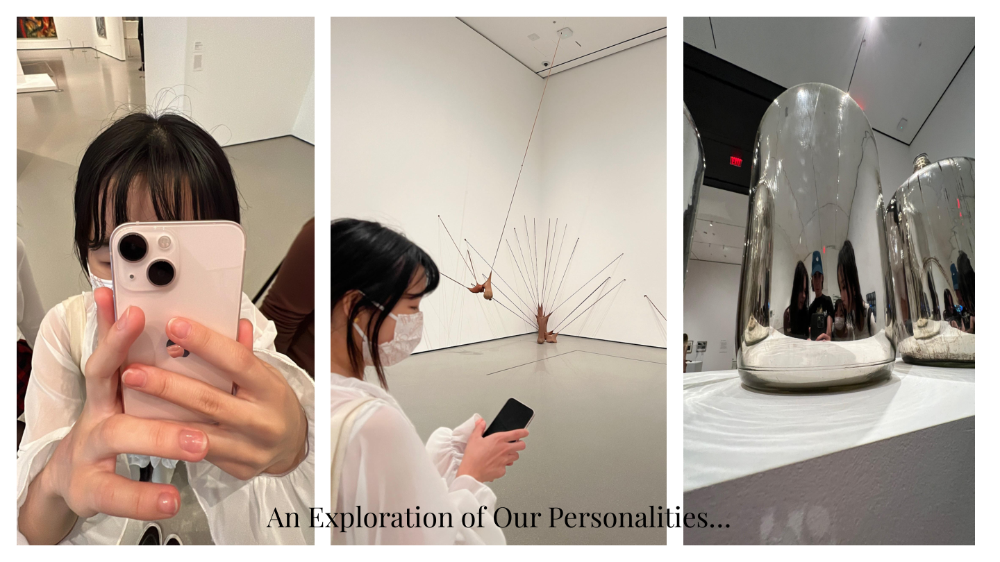
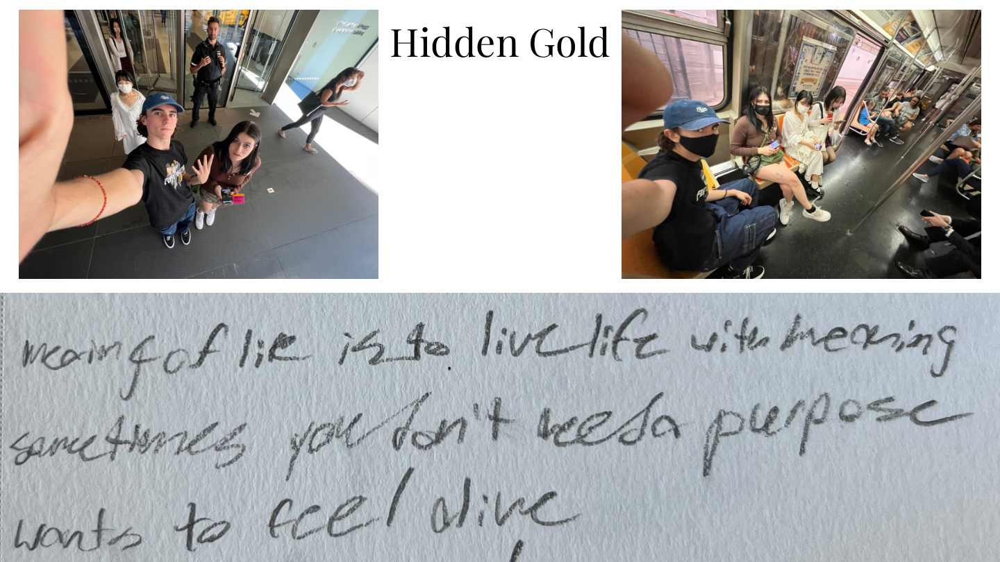

Illustration · Storytelling · Persona Study
A collaborative persona study exploring identity, purpose, and what it means to simply be alive — built from a Proust Questionnaire with an MBTI-opposite partner, told through illustrated photography and hand-lettered typography.
The Brief
Profiles & Personas was a collaborative project in which pairs were formed based on MBTI opposites. The goal was to learn the persona of your partner — someone whose personality type sits at the other end of the spectrum — and create a visual profile that captures who they are.
Stella Zheng and Jack Murray were paired together. Through conversations, a Proust Questionnaire, and time spent exploring New York, the project became a portrait of Stella’s identity, values, and quiet philosophy on life.
The Story
When Stella was young, her Mother read to her. “What is Stella’s purpose?” — the meaning of life is to live life with meaning. But as she grew older, she realized that sometimes you don’t need a purpose. Sometimes you just want to be alive.


Pages 1–4 — “When Stella was young, her Mother read to her…”


Pages 5–7 — “…sometimes you just want to be alive.”
Process
The project began with preliminary portrait drawings and an exploration of personality and artistic preferences — visiting galleries together and documenting Stella’s reactions. Inspiration was drawn from an unorthodox source: children’s book illustration, particularly Corduroy by Don Freeman and Curious George by H.A. Rey.
The narrative was shaped through scrapped ideas, handwritten notes, and hidden gold found in conversation — before being refined through trials in the design lab, iterating on posterized imagery and script typography to find the right visual language.







Process — from preliminary drawings to design lab iterations
“Decide for yourself what it means to be happy.”Stella Proust
The Proust
Questionnaire
What is your idea of perfect happiness?
Living presently, surrounded by good people.
What is your greatest fear?
I often feel like I’m not enough for myself, for others, or for where I am — I don’t know if this counts as a fear, but it might be better put as fearing that to be my reality.
What is the trait you most deplore in yourself?
My overthinking. It’s really a terrible habit.
What is the trait you most deplore in others?
Lack of self-awareness, and inconsideration for others — although it’s often not intentional, one of my pet peeves is when people leave someone to walk on their own behind a group of friends, or when people speak to each other and make it actively difficult for someone to join into the conversation.
Which living person do you most admire?
My mom! I really admire her ability to let things go and unyielding faith in herself.
What is your greatest extravagance?
I have an outrageously large stationery collection.
What is your current state of mind?
I’m feeling okay! I’m still adjusting to New York, but overall I’m pretty tired. I don’t think I’ve gotten proper rest yet.
On what occasion do you lie?
Recently, I probably lie the most about things I can tolerate, for the sake of others since I’m generally quite sensitive to things like light and sound.
What do you most dislike about your appearance?
My nose. It’s an insecurity I’m still learning to love. It would be nice if I was a bit taller too.
What is the quality you most like in a person?
I appreciate people who are very thoughtful with their words and actions — being able to have comfortable silences is nice too.
Which words or phrases do you most overuse?
CUTE.
What or who is the greatest love of your life?
If we’re not counting my mom, I haven’t found it yet.
When and where were you happiest?
I was really happy in the summer of 2020 — I spent a lot of time with myself and with my mom, and rode my bike everyday. I most remember seeing the bright blue sky, which always makes me so grateful to be alive.
Which talent would you most like to have?
I sincerely wish I was better at drawing! But if we’re speaking about talents that aren’t learned, it would be nice to be someone with a big social battery, who was good at making conversation.
If you could change one thing about yourself, what would it be?
I’m working on a lot of different aspects of myself, but I think the most important one is improving my work and sleep habit so I can have more time for the things I really want to do.
What do you consider your greatest achievement?
It is yet to come.
If you were to die and come back as a person or a thing, what would it be?
I do not want to come back. Let me rest!!!
Where would you most like to live?
I’d love to live back in Canada, around Unionville main street. There’s a lovely library and pond, and the area has a lot of history. I grew up in Unionville, and that was my favourite place to visit.
What is your most treasured possession?
If there was a fire, I’d run back to get my childhood blanket.
What do you regard as the lowest depth of misery?
Not being able to pull yourself out from a spiral.
What is your favorite occupation?
If we completely disregard the paycheque, I think being a children’s book illustrator sounds lovely.
What is your most marked characteristic?
Maybe my height, but I’m also told I am extremely nice pretty often (sometimes too nice).
What do you most value in your friends?
People who communicate! Communication is so important to me — if someone cannot communicate how they feel and talk it out, I find it really difficult to be friends, or at least feel very anxious in friendships.
Who are your favorite writers?
I unfortunately don’t have one anymore! I am very fond of Trung Le Nguyen’s book “The Magic Fish” though.
Who are your heroes in real life?
My mom, and this lovely guy named Kim Namjoon (yes, he is a member of BTS).
What are your favorite names?
I met someone named Miracle once. I think that was such a lovely name.
What is it that you most dislike?
Is it childish to say bad smells? I really dislike the stench of stinky tofu. Strong scents make me nauseous, so I’m really not a fan. There’s definitely more profound things I dislike, but this is what comes to mind first.
What is your greatest regret?
There were things I regret in the past, but I now appreciate them for what they were. I think everything happens for a reason, and I strongly believe I’m on the right path — I have a lot of faith in fate and the universe.
How would you like to die?
In my sleep, and also on my birthday. It feels very full circle, dying on your birthday.
What is your motto?
“Decide for yourself what it means to be happy” and “Every day may not be good, but there is good in everyday.”
“Every day may not be good, but there is good in everyday.”Stella Proust